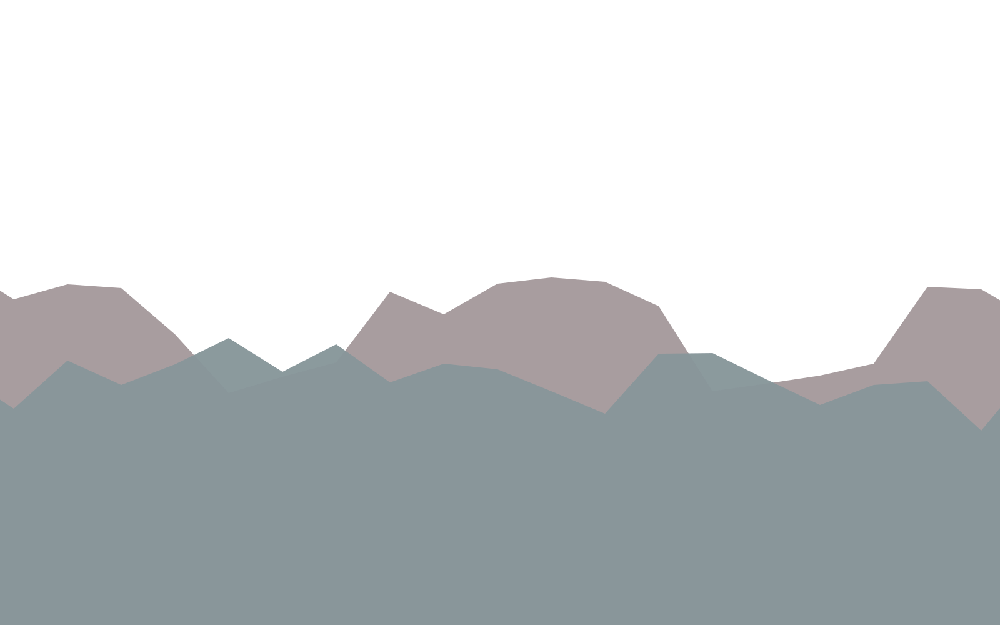
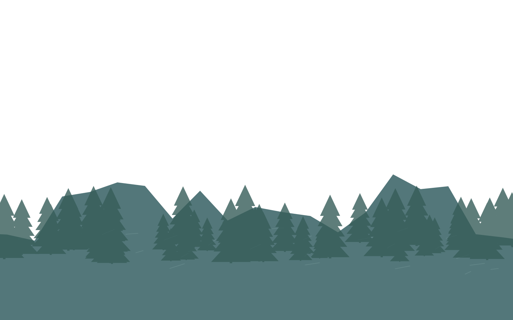
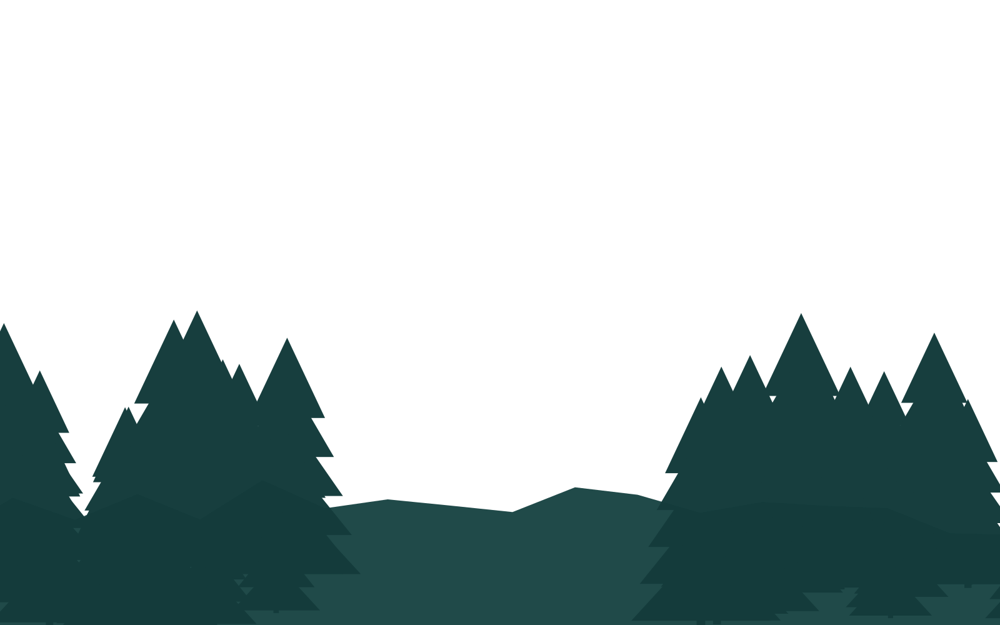
AN INVITATION TO SLOW DOWN
THE
WORLD
IS WILD.
Leave the noise behind.
Follow the light. Find your own way.
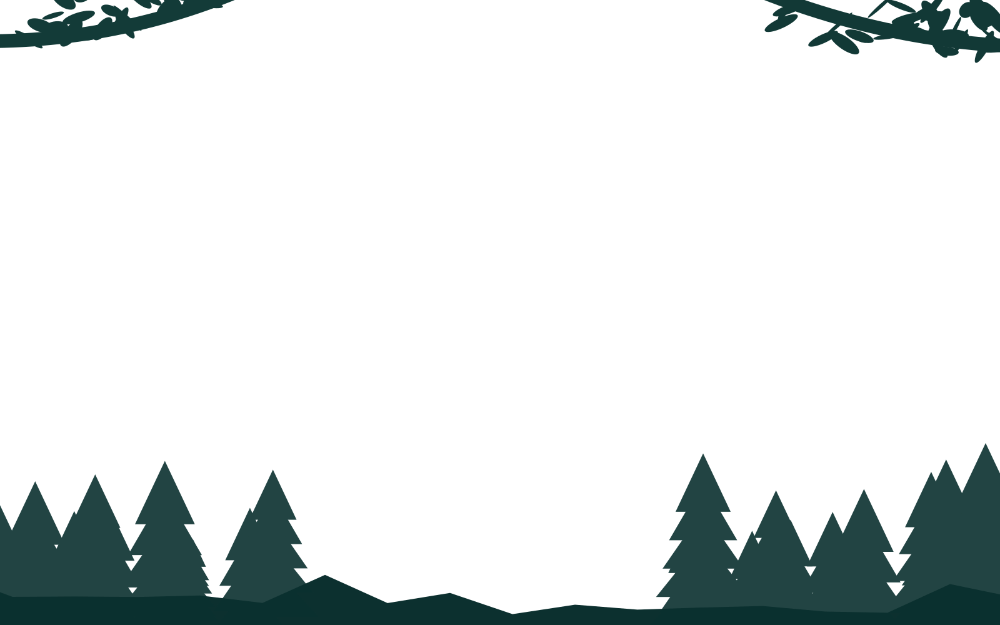
A LITTLE FURTHER, A LITTLE QUIETER
Take the
long way
around.
There is something beautiful about taking a step without knowing exactly where it leads. The world opens up when you move through it slowly enough to notice.
A NOTE FROM THE TRAIL ↗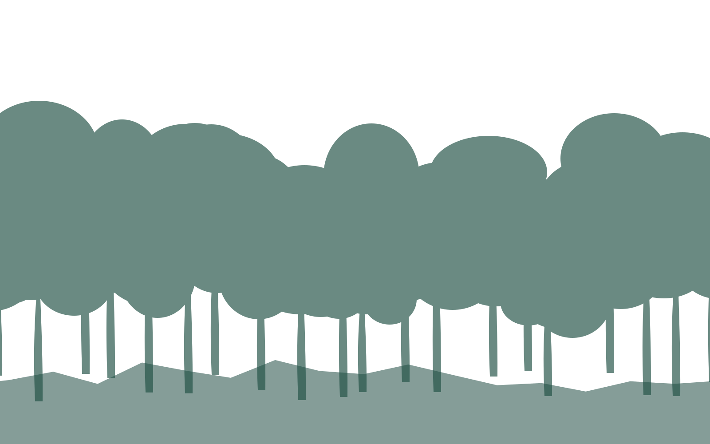
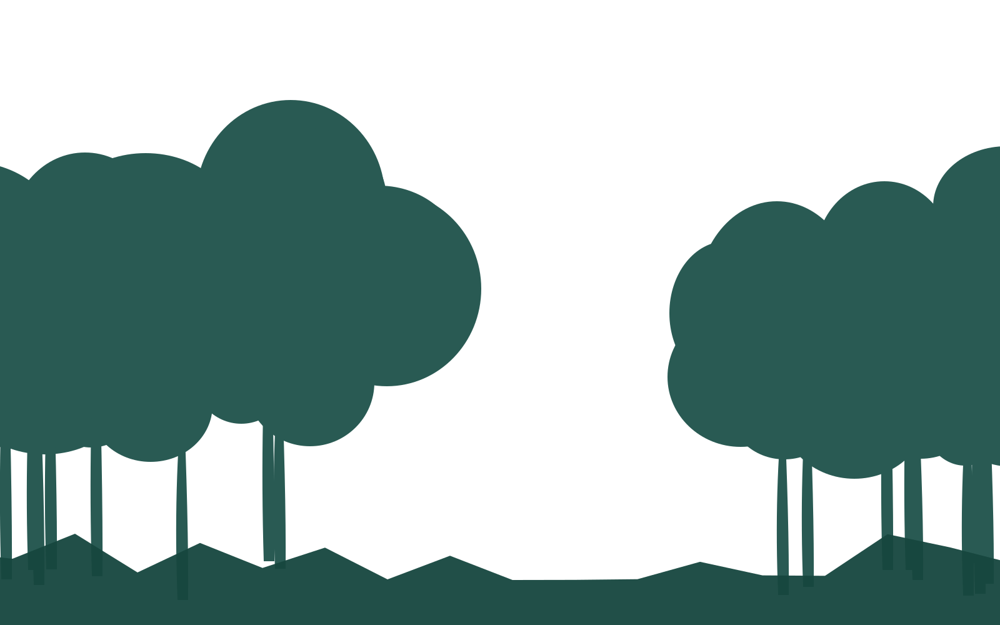
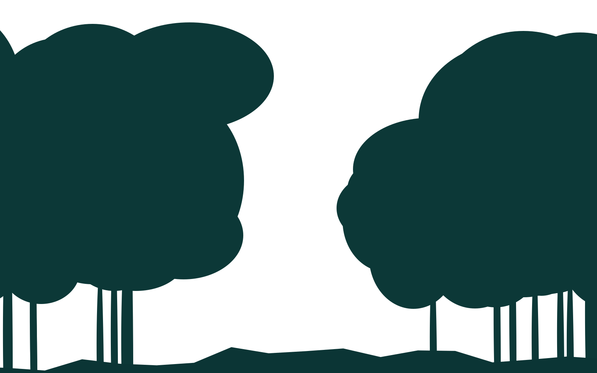
CHAPTER ONE / THE CANOPY
INTO
THE GREEN.
Not every destination needs a map.
Some places are meant to be felt.
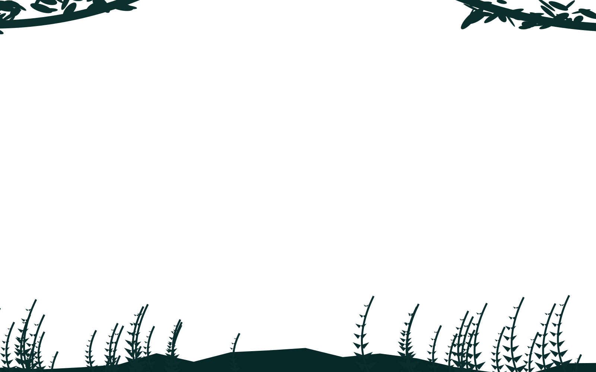
THE BEST THINGS AREN'T RUSHED
Find your
own rhythm.
A trail, a run, a quiet moment under the trees. Movement has a way of bringing us back to the present. No notifications. No expectations. Just this moment.
ONE STEP AT A TIME ↗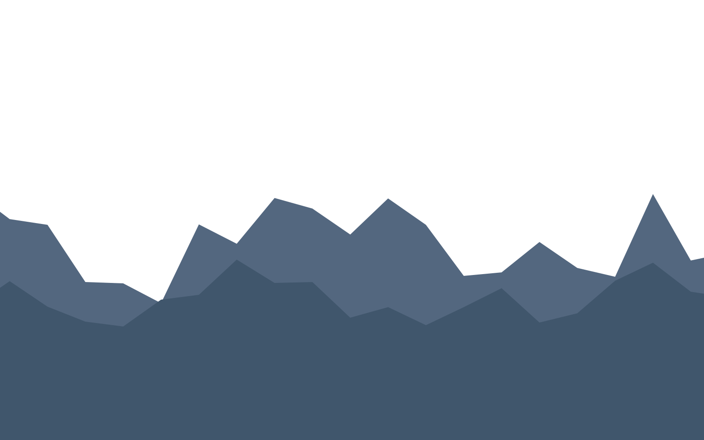
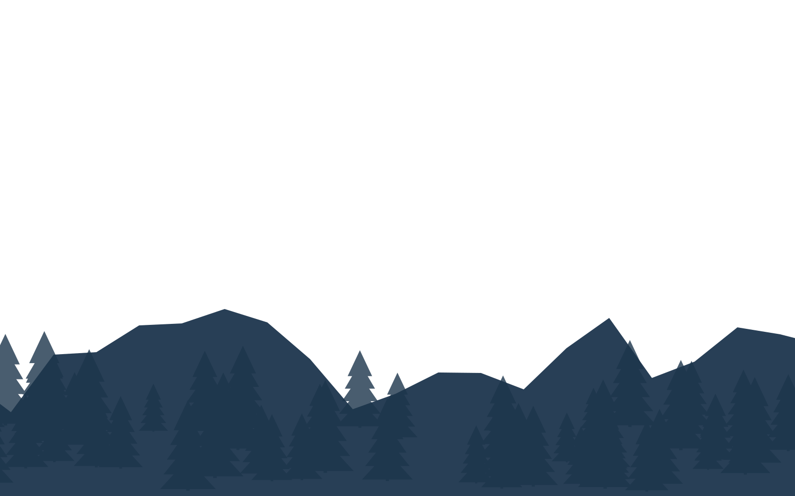
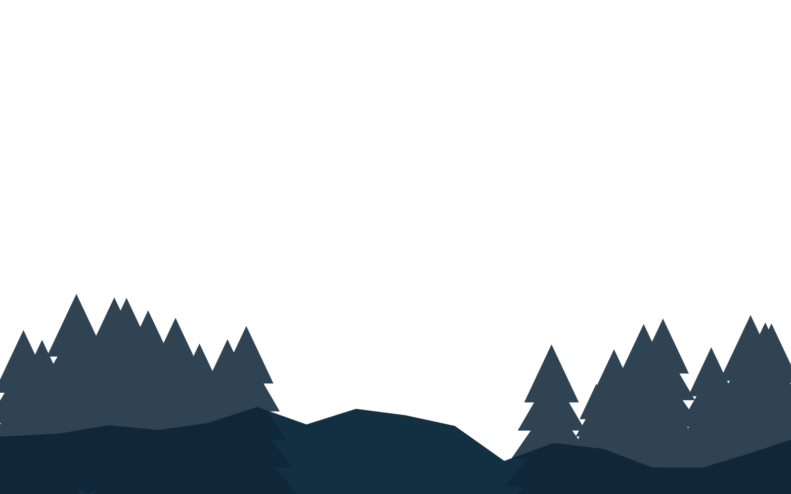
CHAPTER TWO / AFTER DARK
STAY FOR
THE STARS.
The sky has a thousand stories.
Sometimes all you need to do is look up.
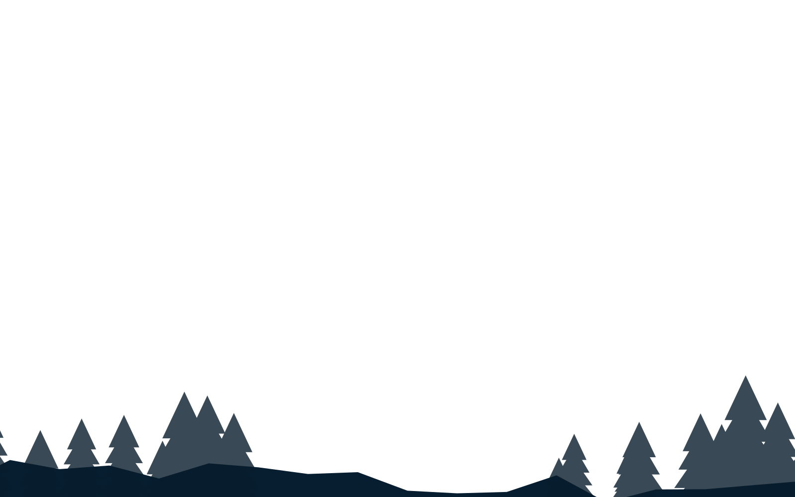
THE JOURNEY DOESN'T REALLY END
STAY
CURIOUS.
There is always another path, another view, another reason to keep going.
TAKE THE JOURNEY AGAINA PEEK UNDER THE HOOD
Made to move.
This experience was crafted with original vector landscapes, HTML, CSS, and vanilla JavaScript. Each visual layer moves at a different rate as you scroll, creating depth without any external animation libraries.
AN INDEPENDENT CREATIVE EXPERIMENT BY MEYENE · MADE FOR THE LIMELIGHTR PARALLAX TASK